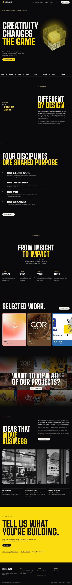

I’m Pumara, an economics graduate with 3+ years of turning what people need into clear workflows, requirements and working systems. I sit between users, management and the people who build, and I test before anything goes live.
The same six steps on every project, from a website to a department’s workflow.
Real work, shown at the level I can share.
A phone-installment business needed clear rules for two departments that pass work to each other. I designed the to-be process so both teams hand off at one controlled point: a device leaves the warehouse only after the case is approved and the contract is signed.
Simplified view. Details of the organisation are kept private.
Management wanted a new site that shows the agency’s work. I gathered what they needed, structured it into 9 pages and a CMS for 68 projects, and built it in Framer.

Hover the image to scroll the full page.
A personal system I specified and shipped. I wrote the requirements and a decision log first, then rolled it out in three stages so nothing touched real money before it proved itself.
Senior project at Maejo University (with Wanvilai Chulapan). I used OLS regression to test how deaths, testing and lockdowns moved sector returns in Indonesia, Malaysia, the Philippines, Thailand and Vietnam, Jan 2020 – Nov 2021.
Services and industrial stocks fell most; wider testing lifted returns in every market, a sign that visible public-health capacity builds confidence.
Always the person between the client, management and the team that builds.
Process, requirements and data.
As-is / to-be mapping · Workflow & flowchart · SOP · SLA & KPI · Roles (JD)
Stakeholder interviews · Business requirements · Acceptance criteria · UAT · Rollout plans
SQL · Power BI · Excel · SPSS · EViews · Python · Framer · Notion · Claude · ChatGPT